Learning Module 8 Equity Valuation: Concepts and Basic Tools - Part 1: Introduction
Volume 5: Equity Investments
Learning Module 8 Equity Valuation: Concepts and Basic Tools
Part 1/4: Introduction (PDF Pages 345–359)
Tập 5: Đầu tư Cổ phiếu (Volume 5: Equity Investments)
Học phần 8: Định giá Cổ phiếu: Các Khái niệm và Công cụ Cơ bản (Equity Valuation: Concepts and Basic Tools)
Phần 1/4: Giới thiệu (Introduction) (Trang PDF 345–359)
L E A R N I N G M O D U L E
H Ọ C P H Ầ N
8
8
Equity Valuation: Concepts and Basic Tools
Định giá Cổ phiếu: Các Khái niệm và Công cụ Cơ bản (Equity Valuation: Concepts and Basic Tools)
by John J. Nagorniak, CFA, and Stephen E. Wilcox, PhD, CFA.
bởi John J. Nagorniak, CFA, và Stephen E. Wilcox, PhD, CFA.
John J. Nagorniak, CFA (USA). Stephen E. Wilcox, PhD, CFA, is at Minnesota State University, Mankato (USA).
John J. Nagorniak, CFA (Hoa Kỳ). Stephen E. Wilcox, PhD, CFA, công tác tại Đại học Bang Minnesota, Mankato (Hoa Kỳ).
LEARNING OUTCOMES
MỤC TIÊU HỌC TẬP (LEARNING OUTCOMES)
| Mastery | The candidate should be able to: |
|---|---|
| evaluate whether a security, given its current market price and a value estimate, is overvalued, fairly valued, or undervalued by the market |
|
| describe major categories of equity valuation models | |
| describe regular cash dividends, extra dividends, stock dividends, stock splits, reverse stock splits, and share repurchases |
|
| describe dividend payment chronology | |
| explain the rationale for using present value models to value equity and describe the dividend discount and free-cash-flow-to-equity models |
|
| explain advantages and disadvantages of each category of valuation model |
|
| calculate the intrinsic value of a non-callable, non-convertible preferred stock |
|
| calculate and interpret the intrinsic value of an equity security based on the Gordon (constant) growth dividend discount model or a two-stage dividend discount model, as appropriate |
|
| identify characteristics of companies for which the constant growth or a multistage dividend discount model is appropriate |
|
| explain the rationale for using price multiples to value equity, how the price to earnings multiple relates to fundamentals, and the use of multiples based on comparables |
| Mức độ thành thạo | Ứng viên cần có khả năng: |
|---|---|
| đánh giá xem một chứng khoán, dựa trên giá thị trường hiện tại và ước tính giá trị của nó, đang được thị trường định giá cao (overvalued), định giá hợp lý (fairly valued), hay định giá thấp (undervalued) | |
| mô tả các nhóm mô hình định giá cổ phiếu chính (major categories of equity valuation models) | |
| mô tả cổ tức tiền mặt thông thường (regular cash dividends), cổ tức bổ sung (extra dividends), cổ tức bằng cổ phiếu (stock dividends), chia tách cổ phiếu (stock splits), gộp cổ phiếu (reverse stock splits), và mua lại cổ phiếu (share repurchases) | |
| mô tả trình tự thời gian chi trả cổ tức (dividend payment chronology) | |
| giải thích cơ sở lý luận của việc sử dụng các mô hình giá trị hiện tại (present value models) để định giá cổ phiếu và mô tả mô hình chiết khấu cổ tức (dividend discount model) cũng như mô hình dòng tiền tự do thuộc về vốn chủ sở hữu (free-cash-flow-to-equity model) | |
| giải thích các ưu điểm và nhược điểm của từng nhóm mô hình định giá | |
| tính toán giá trị nội tại (intrinsic value) của một cổ phiếu ưu đãi không có quyền mua lại và không có quyền chuyển đổi (non-callable, non-convertible preferred stock) | |
| tính toán và diễn giải giá trị nội tại của một chứng khoán vốn dựa trên mô hình chiết khấu cổ tức tăng trưởng đều Gordon (Gordon (constant) growth dividend discount model) hoặc mô hình chiết khấu cổ tức hai giai đoạn (two-stage dividend discount model), tùy trường hợp phù hợp | |
| xác định các đặc điểm của những công ty phù hợp để áp dụng mô hình chiết khấu cổ tức tăng trưởng đều hoặc đa giai đoạn (multistage dividend discount model) | |
| giải thích cơ sở lý luận của việc sử dụng các bội số giá (price multiples) để định giá cổ phiếu, mối liên hệ giữa bội số giá trên thu nhập (price to earnings multiple) với các yếu tố cơ bản (fundamentals), và việc sử dụng các bội số dựa trên phương pháp so sánh (comparables) |
LEARNING OUTCOMES
MỤC TIÊU HỌC TẬP (LEARNING OUTCOMES)
| Mastery | The candidate should be able to: |
|---|---|
| calculate and interpret the following multiples: price to earnings, price to an estimate of operating cash flow, price to sales, and price to book value |
|
| describe enterprise value multiples and their use in estimating equity value |
|
| describe asset-based valuation models and their use in estimating equity value |
| Mức độ thành thạo | Ứng viên cần có khả năng: |
|---|---|
| tính toán và diễn giải các bội số sau: giá trên thu nhập (price to earnings), giá trên ước tính dòng tiền hoạt động (price to an estimate of operating cash flow), giá trên doanh thu (price to sales), và giá trên giá trị sổ sách (price to book value) | |
| mô tả các bội số giá trị doanh nghiệp (enterprise value multiples) và việc sử dụng chúng trong ước tính giá trị vốn chủ sở hữu | |
| mô tả các mô hình định giá dựa trên tài sản (asset-based valuation models) và việc sử dụng chúng trong ước tính giá trị vốn chủ sở hữu |
1
1
INTRODUCTION
GIỚI THIỆU (INTRODUCTION)
Analysts gather and process information to make investment decisions, including buy and sell recommendations. What information is gathered and how it is processed depend on the analyst and the purpose of the analysis. Technical analysis uses such information as stock price and trading volume as the basis for investment decisions. Fundamental analysis uses information about the economy, industry, and company as the basis for investment decisions. Examples of fundamentals are unemployment rates, gross domestic product (GDP) growth, industry growth, and quality of and growth in company earnings. Whereas technical analysts use information to predict price movements and base investment decisions on the direction of predicted change in prices, fundamental analysts use information to estimate the value of a security and to compare the estimated value to the market price and then base investment decisions on that comparison.
Các chuyên gia phân tích thu thập và xử lý thông tin để đưa ra các quyết định đầu tư, bao gồm cả các khuyến nghị mua và bán. Thông tin nào được thu thập và cách thức xử lý thông tin đó phụ thuộc vào chuyên gia phân tích và mục đích của việc phân tích. Phân tích kỹ thuật (technical analysis) sử dụng những thông tin như giá cổ phiếu và khối lượng giao dịch làm cơ sở cho các quyết định đầu tư. Phân tích cơ bản (fundamental analysis) sử dụng thông tin về nền kinh tế, ngành và công ty làm cơ sở cho các quyết định đầu tư. Ví dụ về các yếu tố cơ bản bao gồm tỷ lệ thất nghiệp, tăng trưởng tổng sản phẩm quốc nội (GDP), tăng trưởng ngành, cùng chất lượng và mức tăng trưởng thu nhập của công ty. Trong khi các nhà phân tích kỹ thuật sử dụng thông tin để dự đoán biến động giá và dựa vào chiều hướng thay đổi giá dự kiến để ra quyết định đầu tư, thì các nhà phân tích cơ bản sử dụng thông tin để ước tính giá trị của một chứng khoán, so sánh giá trị ước tính đó với giá thị trường rồi mới đưa ra quyết định đầu tư dựa trên sự so sánh đó.
This reading introduces equity valuation models used to estimate the intrinsic value (synonym: fundamental value ) of a security; intrinsic value is based on an analysis of investment fundamentals and characteristics. The fundamentals to be considered depend on the analyst’s approach to valuation. In a top-down approach, an analyst examines the economic environment, identifies sectors that are expected to prosper in that environment, and analyzes securities of companies from previously identified attractive sectors. In a bottom-up approach, an analyst typically follows an industry or industries and forecasts fundamentals for the companies in those industries in order to determine valuation. Whatever the approach, an analyst who estimates the intrinsic value of an equity security is implicitly questioning the accuracy of the market price as an estimate of value. Valuation is particularly important in active equity portfolio management, which aims to improve on the return–risk trade-off of a portfolio’s benchmark by identifying mispriced securities.
Bài đọc này giới thiệu các mô hình định giá cổ phiếu được sử dụng để ước tính giá trị nội tại (intrinsic value) (từ đồng nghĩa: giá trị cơ bản (fundamental value)) của một chứng khoán; giá trị nội tại được dựa trên việc phân tích các yếu tố cơ bản và đặc điểm của khoản đầu tư. Các yếu tố cơ bản cần xem xét phụ thuộc vào cách tiếp cận định giá của chuyên gia phân tích. Trong cách tiếp cận từ trên xuống (top-down approach), chuyên gia phân tích xem xét môi trường kinh tế, xác định các khu vực/nhóm ngành dự kiến sẽ thịnh vượng trong môi trường đó, và phân tích chứng khoán của các công ty thuộc những nhóm ngành hấp dẫn đã xác định trước đó. Trong cách tiếp cận từ dưới lên (bottom-up approach), chuyên gia phân tích thường theo dõi một hoặc nhiều ngành và dự báo các yếu tố cơ bản cho những công ty trong các ngành đó nhằm xác định mức định giá. Dù theo cách tiếp cận nào, một chuyên gia phân tích khi ước tính giá trị nội tại của một chứng khoán vốn đều đang ngầm đặt câu hỏi về tính chính xác của giá thị trường với tư cách là một ước tính về giá trị. Định giá đặc biệt quan trọng trong quản lý danh mục đầu tư cổ phiếu chủ động (active equity portfolio management), vốn hướng tới mục tiêu cải thiện sự đánh đổi giữa tỷ suất sinh lợi và rủi ro so với chỉ số chuẩn (benchmark) của danh mục bằng cách xác định các chứng khoán bị định giá sai (mispriced securities).
This reading is organized as follows. Section 2 discusses the implications of differences between estimated value and market price. Section 3 introduces three major categories of valuation model. Section 4 presents an overview of present value models with a focus on the dividend discount model. Section 5 describes and examines the use of multiples in valuation. Section 6 explains asset-based valuation and demonstrates how these models can be used to estimate value. Section 7 states conclusions and summarizes the reading.
Bài đọc này được cấu trúc như sau. Phần 2 thảo luận về hàm ý của sự khác biệt giữa giá trị ước tính và giá thị trường. Phần 3 giới thiệu ba nhóm mô hình định giá chính. Phần 4 trình bày tổng quan về các mô hình giá trị hiện tại với trọng tâm là mô hình chiết khấu cổ tức. Phần 5 mô tả và khảo sát việc sử dụng các bội số trong định giá. Phần 6 giải thích định giá dựa trên tài sản và minh họa cách sử dụng các mô hình này để ước tính giá trị. Phần 7 nêu kết luận và tóm tắt bài đọc.
ESTIMATED VALUE AND MARKET PRICE
GIÁ TRỊ ƯỚC TÍNH VÀ GIÁ THỊ TRƯỜNG (ESTIMATED VALUE AND MARKET PRICE)
2
2
evaluate whether a security, given its current market price and a value estimate, is overvalued, fairly valued, or undervalued by the market
đánh giá xem một chứng khoán, dựa trên giá thị trường hiện tại và ước tính giá trị của nó, đang được thị trường định giá cao (overvalued), định giá hợp lý (fairly valued), hay định giá thấp (undervalued)
By comparing estimates of value and market price, an analyst can arrive at one of three conclusions: The security is undervalued , overvalued , or fairly valued in the marketplace. For example, if the market price of an asset is $10 and the analyst estimates intrinsic value at $10, a logical conclusion is that the security is fairly valued. If the security is selling for $20, the security would be considered overvalued. If the security is selling for $5, the security would be considered undervalued. Basically, by estimating value, the analyst is assuming that the market price is not necessarily the best estimate of intrinsic value. If the estimated value exceeds the market price, the analyst infers the security is undervalued . If the estimated value equals the market price, the analyst infers the security is fairly valued . If the estimated value is less than the market price, the analyst infers the security is overvalued .
Bằng cách so sánh các ước tính về giá trị và giá thị trường, một chuyên gia phân tích có thể đi đến một trong ba kết luận: Chứng khoán đang bị định giá thấp (undervalued) , định giá cao (overvalued) , hoặc định giá hợp lý (fairly valued) trên thị trường. Ví dụ, nếu giá thị trường của một tài sản là $10 và chuyên gia phân tích ước tính giá trị nội tại ở mức $10, một kết luận hợp lý là chứng khoán đó đang được định giá hợp lý. Nếu chứng khoán đang được bán với giá $20, chứng khoán đó sẽ được coi là bị định giá cao. Nếu chứng khoán đang được bán với giá $5, chứng khoán đó sẽ được coi là bị định giá thấp. Về cơ bản, bằng việc ước tính giá trị, chuyên gia phân tích đang giả định rằng giá thị trường không nhất thiết là ước tính tốt nhất về giá trị nội tại. Nếu giá trị ước tính vượt quá giá thị trường, chuyên gia phân tích suy ra rằng chứng khoán đang bị định giá thấp. Nếu giá trị ước tính bằng với giá thị trường, chuyên gia phân tích suy ra rằng chứng khoán đang được định giá hợp lý. Nếu giá trị ước tính thấp hơn giá thị trường, chuyên gia phân tích suy ra rằng chứng khoán đang bị định giá cao.
In practice, the conclusion is not so straightforward. Analysts must cope with uncertainties related to model appropriateness and the correct value of inputs. An analyst’s final conclusion depends not only on the comparison of the estimated value and the market price but also on the analyst’s confidence in the estimated value (i.e., in the model selected and the inputs used in it). One can envision a spectrum running from relatively high confidence in the valuation model and the inputs to relatively low confidence in the valuation model and/or the inputs. When confidence is relatively low, the analyst might demand a substantial divergence between his or her own value estimate and the market price before acting on an apparent mispricing. For instance, if the estimate of intrinsic value is $10 and the market price is $10.05, the analyst might reasonably conclude that the security is fairly valued and that the 1/2 of 1 percent market price difference from the estimated value is within the analyst’s confidence interval.
Trên thực tế, kết luận không đơn giản như vậy. Các chuyên gia phân tích phải đối mặt với những sự không chắc chắn liên quan đến tính phù hợp của mô hình và giá trị chính xác của các biến đầu vào. Kết luận cuối cùng của một chuyên gia phân tích không chỉ phụ thuộc vào việc so sánh giữa giá trị ước tính và giá thị trường mà còn phụ thuộc vào mức độ tự tin của chuyên gia phân tích đối với giá trị ước tính đó (tức là đối với mô hình được lựa chọn và các dữ liệu đầu vào được sử dụng trong mô hình). Người ta có thể hình dung một dải phổ trải dài từ mức độ tự tin tương đối cao vào mô hình định giá và các dữ liệu đầu vào cho đến mức độ tự tin tương đối thấp vào mô hình định giá và/hoặc các dữ liệu đầu vào. Khi mức độ tự tin tương đối thấp, chuyên gia phân tích có thể đòi hỏi một sự chênh lệch đáng kể giữa ước tính giá trị của chính họ và giá thị trường trước khi hành động dựa trên một sự định giá sai bề ngoài. Chẳng hạn, nếu ước tính giá trị nội tại là $10 và giá thị trường là $10.05, chuyên gia phân tích có thể kết luận một cách hợp lý rằng chứng khoán đang được định giá hợp lý và mức chênh lệch giá thị trường 0.5% (1/2 của 1 phần trăm) so với giá trị ước tính nằm trong khoảng tin cậy (confidence interval) của chuyên gia phân tích.
Confidence in the convergence of the market price to the intrinsic value over the investment time horizon relevant to the objectives of the portfolio must also be taken into account before an analyst acts on an apparent mispricing or makes a buy, sell, or hold recommendation: The ability to benefit from identifying a mispriced security depends on the market price converging to the estimated intrinsic value.
Sự tự tin vào khả năng hội tụ của giá thị trường về giá trị nội tại trong khung thời gian đầu tư (investment time horizon) phù hợp với các mục tiêu của danh mục đầu tư cũng phải được tính đến trước khi chuyên gia phân tích hành động dựa trên sự định giá sai bề ngoài hoặc đưa ra khuyến nghị mua, bán, hay nắm giữ: Khả năng thu lợi từ việc phát hiện một chứng khoán bị định giá sai phụ thuộc vào việc giá thị trường có hội tụ về giá trị nội tại ước tính hay không.
In seeking to identify mispricing and attractive investments, analysts are treating market prices with skepticism, but they are also treating market prices with respect. For example, an analyst who finds that many securities examined appear to be overvalued will typically recheck models and inputs before acting on a conclusion of overvaluation. Analysts also often recognize and factor into recommendations that different market segments—such as securities closely followed by analysts versus securities relatively neglected by analysts—may differ in how common or persistent mispricing is. Mispricing may be more likely in securities neglected by analysts.
Khi tìm cách xác định sự định giá sai và các khoản đầu tư hấp dẫn, các chuyên gia phân tích nhìn nhận giá thị trường với sự hoài nghi, nhưng họ cũng đồng thời dành sự tôn trọng cho giá thị trường. Ví dụ, một chuyên gia phân tích nhận thấy nhiều chứng khoán được khảo sát dường như đang bị định giá cao thường sẽ kiểm tra lại các mô hình và dữ liệu đầu vào trước khi hành động theo kết luận định giá cao đó. Các chuyên gia phân tích cũng thường nhận diện và đưa vào khuyến nghị của mình thực tế rằng các phân khúc thị trường khác nhau—chẳng hạn như các chứng khoán được giới phân tích theo dõi sát sao so với các chứng khoán tương đối bị giới phân tích bỏ qua—có thể khác biệt về mức độ phổ biến hoặc tính dai dẳng của sự định giá sai. Sự định giá sai có thể dễ xảy ra hơn ở những chứng khoán ít được các chuyên gia phân tích chú ý.
EXAMPLE 1
VÍ DỤ 1 (EXAMPLE 1)
Valuation and Analyst Response
Định giá và Phản ứng của Chuyên gia Phân tích (Valuation and Analyst Response)
- An analyst finds that all the securities analyzed have estimated values higher than their market prices. The securities all appear to be:
- A. overvalued.
- Một chuyên gia phân tích nhận thấy tất cả các chứng khoán được phân tích đều có giá trị ước tính cao hơn giá thị trường của chúng. Tất cả các chứng khoán này dường như đang:
- A. bị định giá cao (overvalued).
B. undervalued.
C. fairly valued.
-
B. bị định giá thấp (undervalued).
-
C. được định giá hợp lý (fairly valued).
Solution:
Lời giải:
B is correct. The estimated intrinsic value for each security is greater than the market price. The securities all appear to be undervalued in the market. Note, however, that the analyst may wish to reexamine the model and inputs to check that the conclusion is valid.
B là đáp án đúng. Giá trị nội tại ước tính cho mỗi chứng khoán đều lớn hơn giá thị trường. Tất cả các chứng khoán này dường như đang bị định giá thấp trên thị trường. Tuy nhiên, lưu ý rằng chuyên gia phân tích có thể muốn kiểm tra lại mô hình và các dữ liệu đầu vào để đảm bảo kết luận đó là hợp lệ.
- An analyst finds that nearly all companies in a market segment have common shares which are trading at market prices above the analyst’s estimate of the shares’ values. This market segment is widely followed by analysts. Which of the following statements describes the analyst’s most appropriate first action?
-
A. Issue a sell recommendation for each share issue.
-
B. Issue a buy recommendation for each share issue.
-
C. Reexamine the models and inputs used for the valuations.
- Một chuyên gia phân tích nhận thấy gần như tất cả các công ty trong một phân khúc thị trường đều có cổ phiếu phổ thông đang giao dịch ở mức giá thị trường cao hơn ước tính của chuyên gia phân tích về giá trị của các cổ phiếu đó. Phân khúc thị trường này được giới phân tích theo dõi rộng rãi. Phát biểu nào sau đây mô tả hành động đầu tiên phù hợp nhất của chuyên gia phân tích?
-
A. Đưa ra khuyến nghị bán cho từng mã cổ phiếu.
-
B. Đưa ra khuyến nghị mua cho từng mã cổ phiếu.
-
C. Kiểm tra lại các mô hình và dữ liệu đầu vào đã sử dụng để định giá.
Solution:
Lời giải:
C is correct. It seems improbable that all the share issues analyzed are overvalued, as indicated by market prices in excess of estimated value—particularly because the market segment is widely followed by analysts. Thus, the analyst will not issue a sell recommendation for each issue. The analyst will most appropriately reexamine the models and inputs prior to issuing any recommendations. A buy recommendation is not an appropriate response to an overvalued security.
C là đáp án đúng. Dường như khó có khả năng tất cả các mã cổ phiếu được phân tích đều bị định giá cao như biểu hiện qua việc giá thị trường vượt quá giá trị ước tính—đặc biệt là vì phân khúc thị trường này được giới phân tích theo dõi rộng rãi. Do đó, chuyên gia phân tích sẽ không đưa ra khuyến nghị bán cho từng mã cổ phiếu ngay. Chuyên gia phân tích sẽ hành động phù hợp nhất là kiểm tra lại các mô hình và dữ liệu đầu vào trước khi đưa ra bất kỳ khuyến nghị nào. Khuyến nghị mua không phải là phản ứng phù hợp đối với một chứng khoán bị định giá cao.
- An analyst, using a number of models and a range of inputs, estimates a security’s value to be between ¥250 and ¥270. The security is trading at ¥265. The security appears to be:
-
A. overvalued.
-
B. undervalued.
-
C. fairly valued.
- Một chuyên gia phân tích, sử dụng một số mô hình và một dải các dữ liệu đầu vào, ước tính giá trị của một chứng khoán nằm trong khoảng từ ¥250 đến ¥270. Chứng khoán này đang giao dịch ở mức giá ¥265. Chứng khoán này dường như đang:
-
A. bị định giá cao.
-
B. bị định giá thấp.
-
C. được định giá hợp lý.
Solution:
Lời giải:
C is correct. The security’s market price of ¥265 is within the range estimated by the analyst. The security appears to be fairly valued.
C là đáp án đúng. Giá thị trường của chứng khoán là ¥265 nằm trong phạm vi ước tính của chuyên gia phân tích. Chứng khoán này dường như đang được định giá hợp lý.
Analysts often use a variety of models and inputs to achieve greater confidence in their estimates of intrinsic value. The use of more than one model and a range of inputs also helps the analyst understand the sensitivity of value estimates to different models and inputs.
Các chuyên gia phân tích thường sử dụng nhiều mô hình và dữ liệu đầu vào khác nhau để đạt được sự tự tin cao hơn vào các ước tính giá trị nội tại của mình. Việc sử dụng nhiều hơn một mô hình và một dải các dữ liệu đầu vào cũng giúp chuyên gia phân tích hiểu được độ nhạy (sensitivity) của các ước tính giá trị trước những mô hình và dữ liệu đầu vào khác nhau.
3 CATEGORIES OF EQUITY VALUATION MODELS
3 CÁC NHÓM MÔ HÌNH ĐỊNH GIÁ CỔ PHIẾU (CATEGORIES OF EQUITY VALUATION MODELS)
describe major categories of equity valuation models
mô tả các nhóm mô hình định giá cổ phiếu chính
Three major categories of equity valuation models are as follows:
- Present value models (synonym: discounted cash flow models ). These models estimate the intrinsic value of a security as the present value of the future benefits expected to be received from the security. In present value models, benefits are often defined in terms of cash expected to be distributed to shareholders ( dividend discount models ) or in terms of cash flows available to be distributed to shareholders after meeting capital expenditure and working capital needs ( free-cash-flow-to-equity models ). Many models fall within this category, ranging from the relatively simple to the very complex. In Section 4, we discuss in detail two of the simpler models, the Gordon (constant) growth model and the two-stage dividend discount models.
Ba nhóm mô hình định giá cổ phiếu chính bao gồm:
■ Multiplier models (synonym: market multiple models ). These models are based chiefly on share price multiples or enterprise value multiples. The former model estimates intrinsic value of a common share from a price multiple for some fundamental variable, such as revenues, earnings, cash flows, or book value. Examples of the multiples include price to earnings (P/E, share price divided by earnings per share) and price to sales (P/S, share price divided by sales per share). The fundamental variable may be stated on a forward basis (e.g., forecasted EPS for the next year) or a trailing basis (e.g., EPS for the past year), as long as the usage is consistent across companies being examined. Price multiples are also used to compare relative values. The use of the ratio of share price to EPS—that is, the P/E multiple—to judge relative value is an example of this approach to equity valuation. Enterprise value (EV) multiples have the form (Enterprise value)/(Value of a fundamental variable). Two possible choices for the denominator are earnings before interest, taxes, depreciation, and amortization (EBITDA) and total revenue. Enterprise value, the numerator, is a measure of a company’s total market value from which cash and short-term investments have been subtracted (because an acquirer could use those assets to pay for acquiring the company). An estimate of common share value can be calculated indirectly from the EV multiple; the value of liabilities and preferred shares can be subtracted from the EV to arrive at the value of common equity.
-
Các mô hình giá trị hiện tại (Present value models) (từ đồng nghĩa: các mô hình dòng tiền chiết khấu (discounted cash flow models)). Các mô hình này ước tính giá trị nội tại của một chứng khoán bằng giá trị hiện tại của các lợi ích tương lai dự kiến nhận được từ chứng khoán đó. Trong các mô hình giá trị hiện tại, lợi ích thường được định nghĩa theo lượng tiền mặt dự kiến sẽ phân phối cho các cổ đông (các mô hình chiết khấu cổ tức – dividend discount models) hoặc theo các dòng tiền sẵn có để phân phối cho cổ đông sau khi đã đáp ứng các nhu cầu chi tiêu vốn và vốn lưu động (các mô hình dòng tiền tự do thuộc về vốn chủ sở hữu – free-cash-flow-to-equity models). Có rất nhiều mô hình thuộc nhóm này, từ tương đối đơn giản đến cực kỳ phức tạp. Trong Phần 4, chúng ta sẽ thảo luận chi tiết về hai trong số các mô hình đơn giản hơn: mô hình tăng trưởng đều Gordon (Gordon (constant) growth model) và mô hình chiết khấu cổ tức hai giai đoạn (two-stage dividend discount models).
-
Các mô hình bội số (Multiplier models) (từ đồng nghĩa: các mô hình bội số thị trường (market multiple models)). Các mô hình này chủ yếu dựa trên bội số giá cổ phiếu (share price multiples) hoặc bội số giá trị doanh nghiệp (enterprise value multiples). Mô hình đầu tiên ước tính giá trị nội tại của một cổ phiếu phổ thông từ bội số giá đối với một biến số cơ bản nào đó, chẳng hạn như doanh thu, thu nhập, dòng tiền, hoặc giá trị sổ sách. Ví dụ về các bội số này bao gồm giá trên thu nhập (P/E, giá cổ phiếu chia cho thu nhập trên mỗi cổ phiếu – EPS) và giá trên doanh thu (P/S, giá cổ phiếu chia cho doanh thu trên mỗi cổ phiếu). Biến số cơ bản có thể được nêu trên cơ sở dự phóng (forward basis – ví dụ: EPS dự báo cho năm tới) hoặc trên cơ sở quá khứ/trượt (trailing basis – ví dụ: EPS của năm vừa qua), miễn là cách sử dụng phải nhất quán giữa các công ty đang được xem xét. Các bội số giá cũng được sử dụng để so sánh các giá trị tương đối. Việc sử dụng tỷ số giữa giá cổ phiếu trên EPS—tức là bội số P/E—để đánh giá giá trị tương đối là một ví dụ về cách tiếp cận này trong định giá cổ phiếu. Các bội số giá trị doanh nghiệp (Enterprise value – EV) có dạng (Giá trị doanh nghiệp)/(Giá trị của một biến số cơ bản). Hai lựa chọn khả dĩ cho mẫu số là thu nhập trước lãi vay, thuế và khấu hao (EBITDA) và tổng doanh thu. Giá trị doanh nghiệp, ở tử số, là thước đo tổng giá trị thị trường của một công ty sau khi đã trừ đi tiền mặt và các khoản đầu tư ngắn hạn (bởi vì bên mua thâu tóm có thể sử dụng những tài sản đó để thanh toán cho việc mua lại công ty). Ước tính giá trị cổ phiếu phổ thông có thể được tính gián tiếp từ bội số EV; giá trị của nợ phải trả và cổ phiếu ưu đãi có thể được trừ khỏi EV để tìm ra giá trị của vốn chủ sở hữu phổ thông.
-
Các mô hình định giá dựa trên tài sản (Asset-based valuation models). Các mô hình này ước tính giá trị nội tại của một cổ phiếu phổ thông từ giá trị ước tính của toàn bộ tài sản của một công ty trừ đi giá trị ước tính của các khoản nợ phải trả và cổ phiếu ưu đãi của công ty đó. Giá trị thị trường ước tính của các tài sản thường được xác định bằng cách thực hiện các điều chỉnh đối với giá trị sổ sách (book value) (từ đồng nghĩa: giá trị ghi sổ (carrying value)) của tài sản và nợ phải trả. Lý thuyết nền tảng của cách tiếp cận dựa trên tài sản là giá trị của một doanh nghiệp bằng tổng giá trị các tài sản của doanh nghiệp đó.
- Asset-based valuation models . These models estimate intrinsic value of a common share from the estimated value of the assets of a corporation minus the estimated value of its liabilities and preferred shares. The estimated market value of the assets is often determined by making adjustments to the book value (synonym: carrying value ) of assets and liabilities. The theory underlying the asset-based approach is that the value of a business is equal to the sum of the value of the business’s assets.
As already mentioned, many analysts use more than one type of model to estimate value. Analysts recognize that each model is a simplification of the real world and that there are uncertainties related to model appropriateness and the inputs to the models. The choice of model(s) will depend on the availability of information to input into the model(s) and the analyst’s confidence in the information and in the appropriateness of the model(s).
Như đã đề cập, nhiều chuyên gia phân tích sử dụng nhiều hơn một loại mô hình để ước tính giá trị. Các chuyên gia phân tích nhận thức rằng mỗi mô hình là một sự đơn giản hóa thế giới thực và luôn tồn tại những sự không chắc chắn liên quan đến tính phù hợp của mô hình cũng như các dữ liệu đầu vào cho mô hình. Việc lựa chọn (các) mô hình sẽ phụ thuộc vào sự sẵn có của thông tin để đưa vào (các) mô hình và mức độ tự tin của chuyên gia phân tích đối với thông tin đó cũng như đối với tính phù hợp của (các) mô hình.
EXAMPLE 2
VÍ DỤ 2 (EXAMPLE 2)
Categories of Equity Valuation Models
Các Nhóm Mô hình Định giá Cổ phiếu (Categories of Equity Valuation Models)
- An analyst is estimating the intrinsic value of a new company. The analyst has one year of financial statements for the company and has calculated the average values of a variety of price multiples for the industry in which the company operates. The analyst plans to use at least one model from each of the three categories of valuation models. The analyst is least likely to rely on the estimate(s) from the:
-
A. multiplier model(s).
-
B. present value model(s).
-
C. asset-based valuation model(s).
- Một chuyên gia phân tích đang ước tính giá trị nội tại của một công ty mới thành lập. Chuyên gia phân tích này có báo cáo tài chính một năm của công ty và đã tính toán giá trị trung bình của nhiều bội số giá khác nhau cho ngành mà công ty đang hoạt động. Chuyên gia phân tích dự định sử dụng ít nhất một mô hình từ mỗi nhóm trong ba nhóm mô hình định giá. Chuyên gia phân tích ít có khả năng nhất sẽ dựa vào (các) ước tính từ:
-
A. (các) mô hình bội số (multiplier models).
-
B. (các) mô hình giá trị hiện tại (present value models).
-
C. (các) mô hình định giá dựa trên tài sản (asset-based valuation models).
Solution:
Lời giải:
B is correct. Because the company has only one year of data available, the analyst is least likely to be confident in the inputs for a present value model. The values on the balance sheet, even before adjustment, are likely to be close to market values because the assets are all relatively new. The multiplier models are based on average multiples from the industry.
B là đáp án đúng. Bởi vì công ty chỉ mới có dữ liệu của một năm, chuyên gia phân tích ít có khả năng nhất sẽ tự tin vào các dữ liệu đầu vào cho một mô hình giá trị hiện tại. Các giá trị trên bảng cân đối kế toán, ngay cả trước khi điều chỉnh, có khả năng sát với giá trị thị trường vì các tài sản đều tương đối mới. Các mô hình bội số thì được dựa trên các bội số trung bình của ngành.
- Based on a company’s EPS of €1.35, an analyst estimates the intrinsic value of a security to be €16.60. Which type of model is the analyst most likely to be using to estimate intrinsic value?
-
A. Multiplier model.
-
B. Present value model.
-
C. Asset-based valuation model.
- Dựa trên mức EPS của một công ty là €1.35, một chuyên gia phân tích ước tính giá trị nội tại của một chứng khoán là €16.60. Chuyên gia phân tích này có khả năng cao nhất đang sử dụng loại mô hình nào để ước tính giá trị nội tại?
-
A. Mô hình bội số (Multiplier model).
-
B. Mô hình giá trị hiện tại (Present value model).
-
C. Mô hình định giá dựa trên tài sản (Asset-based valuation model).
Solution:
Lời giải:
A is correct. The analyst is using a multiplier model based on the P/E multiple. The P/E multiple used was 16.60/1.35 = 12.3.
A là đáp án đúng. Chuyên gia phân tích đang sử dụng mô hình bội số dựa trên bội số P/E. Bội số P/E được sử dụng là $16.60 / 1.35 = 12.3$.
As you begin the study of specific equity valuation models in the next section, you must bear in mind that any model of value is, by necessity, a simplification of the real world. Never forget this simple fact! You may encounter models much more complicated than the ones discussed here, but even those models will be simplifications of reality.
Khi bạn bắt đầu nghiên cứu các mô hình định giá cổ phiếu cụ thể trong phần tiếp theo, bạn phải luôn ghi nhớ rằng bất kỳ mô hình định giá nào, về mặt tất yếu, đều là một sự đơn giản hóa thế giới thực. Đừng bao giờ quên sự thật đơn giản này! Bạn có thể bắt gặp những mô hình phức tạp hơn nhiều so với những mô hình được thảo luận ở đây, nhưng ngay cả những mô hình đó cũng vẫn là sự đơn giản hóa thực tế.
4
4
BACKGROUND FOR THE DIVIDEND DISCOUNT MODEL
KIẾN THỨC NỀN TẢNG CHO MÔ HÌNH CHIẾT KHẤU CỔ TỨC (BACKGROUND FOR THE DIVIDEND DISCOUNT MODEL)
describe regular cash dividends, extra dividends, stock dividends, stock splits, reverse stock splits, and share repurchases describe dividend payment chronology
mô tả cổ tức tiền mặt thông thường, cổ tức bổ sung, cổ tức bằng cổ phiếu, chia tách cổ phiếu, gộp cổ phiếu, và mua lại cổ phiếu mô tả trình tự thời gian chi trả cổ tức
Present value models follow a fundamental tenet of economics which states that individuals defer consumption—that is, they invest—for the future benefits expected. Individuals and companies make an investment because they expect thereby to earn a
Các mô hình giá trị hiện tại tuân theo một nguyên lý cơ bản của kinh tế học, phát biểu rằng các cá nhân trì hoãn tiêu dùng—tức là họ đầu tư—vì những lợi ích dự kiến trong tương lai. Các cá nhân và công ty thực hiện một khoản đầu tư bởi vì qua đó họ kỳ vọng sẽ kiếm được một
rate of return over the investment period. Logically, the value of an investment should be equal to the present value of the expected future benefits. For common shares, an analyst can equate benefits to the cash flows to be generated by the investment. The simplest present value model of equity valuation is the dividend discount model (DDM), which specifies cash flows from a common stock investment to be dividends.
tỷ suất sinh lợi trong suốt kỳ đầu tư. Về mặt logic, giá trị của một khoản đầu tư phải bằng giá trị hiện tại của các lợi ích tương lai dự kiến. Đối với cổ phiếu phổ thông, chuyên gia phân tích có thể đồng nhất các lợi ích với các dòng tiền sẽ được tạo ra bởi khoản đầu tư đó. Mô hình giá trị hiện tại đơn giản nhất trong định giá cổ phiếu là mô hình chiết khấu cổ tức (dividend discount model – DDM), mô hình xác định các dòng tiền từ khoản đầu tư cổ phiếu phổ thông chính là cổ tức.
The next section describes aspects of dividends that users of dividend discount models should understand.
Phần tiếp theo mô tả các khía cạnh của cổ tức mà người sử dụng các mô hình chiết khấu cổ tức cần phải hiểu rõ.
Dividends: Background for the Dividend Discount Model
Cổ tức: Kiến thức Nền tảng cho Mô hình Chiết khấu Cổ tức (Dividends: Background for the Dividend Discount Model)
Generally, there are two sources of return from investing in equities: (1) cash dividends received by an investor over his or her holding period and (2) the change in the market price of equities over that holding period.
Nhìn chung, có hai nguồn tỷ suất sinh lợi từ việc đầu tư vào cổ phiếu: (1) cổ tức tiền mặt (cash dividends) mà nhà đầu tư nhận được trong thời kỳ nắm giữ và (2) sự thay đổi trong giá thị trường của cổ phiếu trong thời kỳ nắm giữ đó.
A dividend is a distribution paid to shareholders based on the number of shares owned, and a cash dividend is a cash distribution made to a company’s shareholders. Cash dividends are typically paid out regularly at known intervals; such dividends are known as regular cash dividends. By contrast, an extra dividend or special dividend is a dividend paid by a company that does not pay dividends on a regular schedule or a dividend that supplements regular cash dividends with an extra payment. Companies in cyclical industries and companies undergoing corporate and/or financial restructuring are among those observed to use extra dividends.1
Cổ tức (dividend) là khoản phân phối được chi trả cho các cổ đông dựa trên số lượng cổ phiếu nắm giữ, và cổ tức tiền mặt (cash dividend) là khoản phân phối bằng tiền mặt cho các cổ đông của công ty. Cổ tức tiền mặt thường được chi trả định kỳ theo các khoảng thời gian đã biết trước; những khoản cổ tức như vậy được gọi là cổ tức tiền mặt thông thường (regular cash dividends). Ngược lại, cổ tức bổ sung (extra dividend) hay cổ tức đặc biệt (special dividend) là khoản cổ tức được chi trả bởi một công ty vốn không trả cổ tức theo lịch trình định kỳ, hoặc là khoản cổ tức bổ sung thêm một khoản chi trả phụ trội vào cổ tức tiền mặt thông thường. Các công ty trong những ngành có tính chu kỳ và các công ty đang trải qua quá trình tái cấu trúc doanh nghiệp và/hoặc tài chính nằm trong số những doanh nghiệp thường được quan sát thấy sử dụng cổ tức bổ sung.1
The payment of dividends is not a legal obligation: dividends must be declared (i.e., authorized) by a company’s board of directors; in some jurisdictions, they must also be approved by shareholders. Regular cash dividends are customarily declared and paid out quarterly in the United States and Canada; semiannually in Europe and Japan; and annually in some other countries, including China.
Việc chi trả cổ tức không phải là một nghĩa vụ pháp lý: cổ tức phải được công bố (tức là được phê duyệt/ủy quyền) bởi hội đồng quản trị của công ty; tại một số khu vực pháp lý, chúng còn phải được sự chấp thuận của các cổ đông. Cổ tức tiền mặt thông thường theo thông lệ được công bố và chi trả hàng quý tại Hoa Kỳ và Canada; nửa năm một lần (bán niên) tại Châu Âu và Nhật Bản; và hàng năm tại một số quốc gia khác, bao gồm cả Trung Quốc.
Dividend discount models address discounting expected cash dividends. A stock dividend (also known as a bonus issue of shares ) is a type of dividend in which a company distributes additional shares of its common stock (typically, 2%–10% of the shares then outstanding) to shareholders instead of cash. A stock dividend divides the “pie” (the market value of shareholders’ equity) into smaller pieces without affecting the value of the pie or any shareholder’s proportional ownership in the company. Thus, stock dividends are not relevant for valuation. Stock splits and reverse stock splits are similar to stock dividends in that they have no economic effect on the company or shareholders. A stock split involves an increase in the number of shares outstanding with a consequent decrease in share price. An example of a stock split is a two-for-one stock split in which each shareholder is issued an additional share for each share currently owned. A reverse stock split involves a reduction in the number of shares outstanding with a corresponding increase in share price. In a one-for-two reverse stock split, each shareholder would receive one new share for every two old shares held, thereby reducing the number of shares outstanding by half.
Các mô hình chiết khấu cổ tức giải quyết việc chiết khấu các khoản cổ tức tiền mặt dự kiến. Cổ tức bằng cổ phiếu (stock dividend) (còn được gọi là phát hành cổ phiếu thưởng – bonus issue of shares) là một loại cổ tức trong đó công ty phân phối thêm cổ phiếu phổ thông của chính mình (thường là 2%–10% số lượng cổ phiếu đang lưu hành tại thời điểm đó) cho các cổ đông thay vì tiền mặt. Cổ tức bằng cổ phiếu chia "chiếc bánh" (giá trị thị trường của vốn chủ sở hữu) thành những phần nhỏ hơn mà không làm ảnh hưởng đến tổng giá trị của chiếc bánh hay tỷ lệ sở hữu tương ứng của bất kỳ cổ đông nào trong công ty. Do đó, cổ tức bằng cổ phiếu không có ý nghĩa liên quan đối với việc định giá. Chia tách cổ phiếu (stock splits) và gộp cổ phiếu (reverse stock splits) cũng tương tự như cổ tức bằng cổ phiếu ở chỗ chúng không có tác động kinh tế nào đối với công ty hay các cổ đông. Chia tách cổ phiếu (stock split) bao gồm việc tăng số lượng cổ phiếu đang lưu hành đi kèm với sự sụt giảm tương ứng của giá cổ phiếu. Một ví dụ về chia tách cổ phiếu là chia tách cổ phiếu theo tỷ lệ hai đổi một (2-for-1), trong đó mỗi cổ đông được phát hành thêm một cổ phiếu cho mỗi cổ phiếu hiện đang sở hữu. Gộp cổ phiếu (reverse stock split) bao gồm việc giảm số lượng cổ phiếu đang lưu hành đi kèm với sự gia tăng tương ứng của giá cổ phiếu. Trong đợt gộp cổ phiếu tỷ lệ một đổi hai (1-for-2), mỗi cổ đông sẽ nhận được một cổ phiếu mới cho mỗi hai cổ phiếu cũ đang nắm giữ, qua đó làm giảm một nửa số lượng cổ phiếu đang lưu hành.
In contrast to stock dividends and stock splits, share repurchases are an alternative to cash dividend payments. A share repurchase (or buyback ) is a transaction in which a company uses cash to buy back its own shares. Shares that have been repurchased are not considered for dividends, voting, or computing earnings per share. A share repurchase is viewed as equivalent to the payment of cash dividends of equal value in terms of the effect on shareholders’ wealth, all other things being equal. Company managements have expressed several key reasons for engaging in share repurchases— namely, (1) signaling a belief that their shares are undervalued (or, more generally, to
Trái ngược với cổ tức bằng cổ phiếu và chia tách cổ phiếu, mua lại cổ phiếu là một phương án thay thế cho việc chi trả cổ tức bằng tiền mặt. Mua lại cổ phiếu (share repurchase hoặc buyback) là một giao dịch trong đó công ty sử dụng tiền mặt để mua lại cổ phiếu của chính mình. Những cổ phiếu đã được mua lại (cổ phiếu quỹ) sẽ không được tính khi chia cổ tức, biểu quyết, hoặc tính toán thu nhập trên mỗi cổ phiếu (EPS). Mua lại cổ phiếu được xem là tương đương với việc chi trả cổ tức tiền mặt có cùng giá trị xét về mặt tác động lên tài sản của cổ đông, với giả định các yếu tố khác không đổi. Ban lãnh đạo các công ty đã nêu ra một số lý do chính cho việc thực hiện mua lại cổ phiếu—cụ thể là: (1) phát tín hiệu về niềm tin rằng cổ phiếu của họ đang bị định giá thấp (hoặc nói rộng hơn là để
1 Another type of dividend is a liquidating dividend, which is a return of capital rather than a distribution from earnings or retained earnings. Liquidating dividends are used when a company goes out of business and distributes its net assets, sells a portion of its business for cash and distributes the sale’s proceeds, or pays a dividend that exceeds its accumulated retained earnings.
1 Một loại cổ tức khác là cổ tức thanh lý (liquidating dividend), đây là khoản hoàn trả vốn thay vì phân phối từ thu nhập hoặc lợi nhuận giữ lại. Cổ tức thanh lý được sử dụng khi một công ty ngừng hoạt động kinh doanh và phân phối tài sản ròng của mình, bán một phần hoạt động kinh doanh lấy tiền mặt và phân phối số tiền thu được từ việc bán đó, hoặc trả một khoản cổ tức vượt quá lợi nhuận giữ lại lũy kế của công ty.
support share prices), (2) flexibility in the amount and timing of distributing cash to shareholders, (3) tax efficiency in markets where tax rates on dividends exceed tax rates on capital gains, and (4) the ability to absorb increases in outstanding shares because of the exercise of employee stock options.
hỗ trợ giá cổ phiếu), (2) sự linh hoạt về quy mô và thời điểm phân phối tiền mặt cho các cổ đông, (3) hiệu quả về thuế tại những thị trường nơi thuế suất đánh vào cổ tức cao hơn thuế suất đánh vào lãi vốn (capital gains), và (4) khả năng hấp thụ sự gia tăng số lượng cổ phiếu đang lưu hành do việc thực hiện quyền chọn cổ phiếu của nhân viên (employee stock options).
The payout of regular cash dividends to common shareholders follows a fairly standard chronology that is set in motion once the company’s board of directors votes to pay the dividend. First is the declaration date , the day that the company issues a statement declaring a specific dividend. Next comes the ex-dividend date (or ex-date), the first date that a share trades without (i.e., “ex”) the dividend. This is followed closely (one or two business days later) by the holder-of-record date (also called the owner-of-record date, shareholder-of-record date, record date, date of record, or date of book closure), the date that a shareholder listed on the company’s books will be deemed to have ownership of the shares for purposes of receiving the upcoming dividend; the amount of time between the ex-date and the holder-of-record date is linked to the trade settlement cycle in force. The final milestone is the payment date (or payable date ), which is the day that the company actually mails out (or electronically transfers) a dividend payment to shareholders.
Việc chi trả cổ tức tiền mặt thông thường cho các cổ đông phổ thông tuân theo một trình tự thời gian khá chuẩn mực, được khởi động một khi hội đồng quản trị của công ty bỏ phiếu thông qua việc trả cổ tức. Đầu tiên là ngày công bố (declaration date), ngày mà công ty đưa ra thông báo công bố một mức cổ tức cụ thể. Tiếp theo là ngày giao dịch không hưởng quyền (ex-dividend date hoặc ex-date), ngày đầu tiên mà cổ phiếu được giao dịch mà không kèm theo (tức là "ex") quyền nhận cổ tức. Theo sát ngay sau đó (một hoặc hai ngày làm việc sau) là ngày đăng ký cuối cùng (holder-of-record date) (còn được gọi là ngày chủ sở hữu ghi sổ – owner-of-record date, ngày cổ đông ghi sổ – shareholder-of-record date, ngày ghi sổ – record date, date of record, hoặc ngày khóa sổ – date of book closure), là ngày mà một cổ đông có tên trong sổ sách của công ty sẽ được coi là có quyền sở hữu cổ phiếu cho mục đích nhận khoản cổ tức sắp tới; khoảng thời gian giữa ngày giao dịch không hưởng quyền và ngày đăng ký cuối cùng gắn liền với chu kỳ thanh toán bù trừ giao dịch (trade settlement cycle) đang có hiệu lực. Cột mốc cuối cùng là ngày thanh toán (payment date hoặc payable date), là ngày mà công ty thực sự gửi thư (hoặc chuyển khoản điện tử) khoản tiền thanh toán cổ tức cho các cổ đông.
EXAMPLE 3
VÍ DỤ 3 (EXAMPLE 3)
Total S.A. Dividend Payment Time Line
Đường Thời gian Chi trả Cổ tức của Total S.A. (Total S.A. Dividend Payment Time Line)
On 26 May 2017, Total S.A., one of the world’s largest integrated energy companies, declared an annual dividend of €2.48 per share, payable on a quarterly basis. The first quarterly dividend of €2.48/4 = €0.62 was payable on 12 October 2017. The holder-of-record date was 26 September, and the ex-dividend date was 25 September. A timeline for the upcoming Total S.A. quarterly dividend is shown in Exhibit 1.
Vào ngày 26 tháng 5 năm 2017, Total S.A., một trong những tập đoàn năng lượng tích hợp lớn nhất thế giới, đã công bố mức cổ tức hàng năm là €2.48 trên mỗi cổ phiếu, được trả định kỳ hàng quý. Khoản cổ tức hàng quý đầu tiên là $€2.48 / 4 = €0.62$ được thanh toán vào ngày 12 tháng 10 năm 2017. Ngày đăng ký cuối cùng là ngày 26 tháng 9, và ngày giao dịch không hưởng quyền là ngày 25 tháng 9. Đường thời gian cho khoản cổ tức hàng quý sắp tới của Total S.A. được thể hiện trong Bảng minh họa 1 (Exhibit 1).
Exhibit 1: Timeline for Total S.A. Quarterly Dividend
Bảng minh họa 1: Đường thời gian cho Cổ tức Hàng quý của Total S.A. (Exhibit 1: Timeline for Total S.A. Quarterly Dividend)
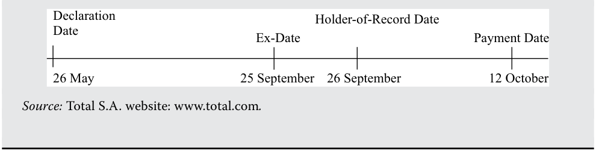
Chú thích hình ảnh: - 26 May (26 tháng 5): Declaration Date (Ngày công bố) - 25 September (25 tháng 9): Ex-Date (Ngày giao dịch không hưởng quyền) - 26 September (26 tháng 9): Holder-of-Record Date (Ngày đăng ký cuối cùng) - 12 October (12 tháng 10): Payment Date (Ngày thanh toán) - Nguồn: Trang web của Total S.A.: www.total.com.
Because buyers of a company’s shares on the ex-dividend date are no longer eligible to receive the upcoming dividend, all else being equal, on that day the company’s share price immediately decreases by the amount of the foregone dividend. Exhibit 2 illustrates the decrease in share price that occurs for a hypothetical company that has declared a $1.00 per share dividend as trading begins on its ex-dividend date.
Bởi vì những người mua cổ phiếu của công ty vào ngày giao dịch không hưởng quyền không còn đủ điều kiện để nhận khoản cổ tức sắp tới, nên với giả định các yếu tố khác không đổi, vào ngày hôm đó giá cổ phiếu của công ty sẽ ngay lập tức giảm xuống một lượng bằng với khoản cổ tức bị mất đi. Bảng minh họa 2 (Exhibit 2) minh họa sự sụt giảm giá cổ phiếu diễn ra đối với một công ty giả định đã công bố mức cổ tức $1.00 trên mỗi cổ phiếu khi giao dịch bắt đầu vào ngày giao dịch không hưởng quyền của công ty đó.
Exhibit 2: Stock Price Change for Hypothetical Company on Ex-Dividend Date
Bảng minh họa 2: Thay đổi Giá Cổ phiếu của Công ty Giả định vào Ngày Giao dịch Không hưởng quyền (Exhibit 2: Stock Price Change for Hypothetical Company on Ex-Dividend Date)
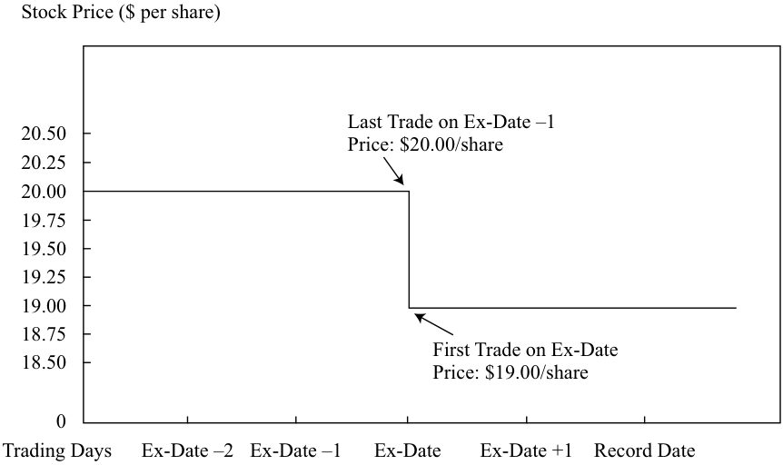
Chú thích hình ảnh: - Trục tung: Giá cổ phiếu ($ trên mỗi cổ phiếu) từ 0 đến 20.50. - Trục hoành: Các ngày giao dịch (Trading Days): Ex-Date –2, Ex-Date –1, Ex-Date (Ngày giao dịch không hưởng quyền), Ex-Date +1, Record Date (Ngày đăng ký cuối cùng). - Giao dịch cuối cùng vào ngày Ex-Date –1 (Last Trade on Ex-Date –1): Giá: $20.00/cổ phiếu. - Giao dịch đầu tiên vào ngày Ex-Date (First Trade on Ex-Date): Giá: $19.00/cổ phiếu.
Note : Assumes dividend declared is $1 per share and convention for stock trade settlement is T + 3.
Lưu ý : Giả định cổ tức được công bố là $1 trên mỗi cổ phiếu và thông lệ thanh toán bù trừ giao dịch cổ phiếu là $T + 3$.
DIVIDEND DISCOUNT MODEL (DDM) AND FREE-CASH-FLOW-TO-EQUITY MODEL (FCFE)
MÔ HÌNH CHIẾT KHẤU CỔ TỨC (DDM) VÀ MÔ HÌNH DÒNG TIỀN TỰ DO THUỘC VỀ VỐN CHỦ SỞ HỮU (FCFE) (DIVIDEND DISCOUNT MODEL (DDM) AND FREE-CASH-FLOW-TO-EQUITY MODEL (FCFE))
5
5
explain the rationale for using present value models to value equity and describe the dividend discount and free-cash-flow-to-equity models explain advantages and disadvantages of each category of valuation model
giải thích cơ sở lý luận của việc sử dụng các mô hình giá trị hiện tại để định giá cổ phiếu và mô tả mô hình chiết khấu cổ tức cũng như mô hình dòng tiền tự do thuộc về vốn chủ sở hữu giải thích các ưu điểm và nhược điểm của từng nhóm mô hình định giá
If the issuing company is assumed to be a going concern, the intrinsic value of a share is the present value of expected future dividends. If a constant required rate of return is also assumed, then the DDM expression for the intrinsic value of a share is Equation 1:
Nếu công ty phát hành được giả định là một doanh nghiệp hoạt động liên tục (going concern), giá trị nội tại của một cổ phiếu chính là giá trị hiện tại của các khoản cổ tức dự kiến trong tương lai. Nếu giả định thêm một tỷ suất sinh lợi yêu cầu không đổi, thì biểu thức DDM cho giá trị nội tại của một cổ phiếu là Phương trình 1:
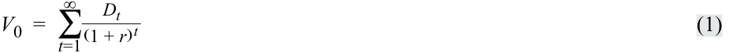
where
trong đó
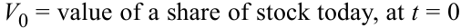
- $V_0 =$ giá trị của một cổ phiếu ngày hôm nay, tại $t = 0$
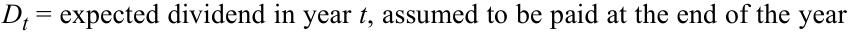
- r = required rate of return on the stock
- $D_t =$ cổ tức dự kiến trong năm $t$, được giả định là chi trả vào cuối năm
- $r =$ tỷ suất sinh lợi yêu cầu (required rate of return) đối với cổ phiếu
At the shareholder level, cash received from a common stock investment includes any dividends received and the proceeds when shares are sold. If an investor intends to buy and hold a share for one year, the value of the share today is the present value of two cash flows—namely, the expected dividend plus the expected selling price in one year:
Ở cấp độ cổ đông, tiền mặt nhận được từ một khoản đầu tư cổ phiếu phổ thông bao gồm bất kỳ khoản cổ tức nào nhận được cùng với số tiền thu về khi bán cổ phiếu. Nếu một nhà đầu tư dự định mua và nắm giữ một cổ phiếu trong một năm, giá trị của cổ phiếu ngày hôm nay là giá trị hiện tại của hai dòng tiền—cụ thể là, cổ tức dự kiến cộng với giá bán dự kiến sau một năm:
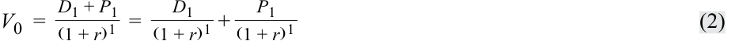
where P 1 = the expected price per share at t = 1.
trong đó $P_1 =$ giá dự kiến trên mỗi cổ phiếu tại $t = 1$.
To estimate the expected selling price, P 1, the analyst could estimate the price another investor with a one-year holding period would pay for the share in one year. If V 0 is based on D 1 and P 1, it follows that P 1 could be estimated from D 2 and P 2:
Để ước tính giá bán dự kiến, $P_1$, chuyên gia phân tích có thể ước tính mức giá mà một nhà đầu tư khác có thời kỳ nắm giữ một năm sẽ sẵn lòng trả cho cổ phiếu đó sau một năm nữa. Nếu $V_0$ được dựa trên $D_1$ và $P_1$, thì suy ra rằng $P_1$ có thể được ước tính từ $D_2$ và $P_2$:
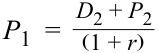
Substituting the right side of this equation for P 1 in Equation 2 results in V 0 estimated as
Thay thế vế phải của phương trình này cho $P_1$ trong Phương trình 2 sẽ cho ra kết quả ước tính $V_0$ là:
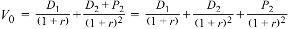
Repeating this process, we find the value for n holding periods is the present value of the expected dividends for the n periods plus the present value of the expected price in n periods:
Lặp lại quá trình này, chúng ta tìm được giá trị cho $n$ kỳ nắm giữ bằng giá trị hiện tại của các khoản cổ tức dự kiến trong $n$ kỳ cộng với giá trị hiện tại của mức giá dự kiến sau $n$ kỳ:
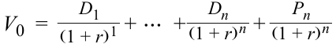
Using summation notation to represent the present value of the n expected dividends, we arrive at the general expression for an n -period holding period or investment horizon:
Sử dụng ký hiệu tổng ($\sum$) để biểu diễn giá trị hiện tại của $n$ khoản cổ tức dự kiến, chúng ta đi đến biểu thức tổng quát cho một thời kỳ nắm giữ hoặc khung thời gian đầu tư gồm $n$ kỳ:
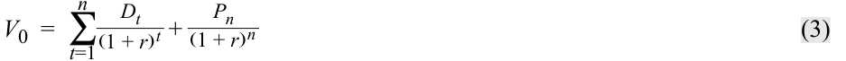
The expected value of a share at the end of the investment horizon—in effect, the expected selling price—is often referred to as the terminal stock value (or terminal value ).
Giá trị dự kiến của một cổ phiếu tại thời điểm kết thúc khung thời gian đầu tư—trên thực tế chính là giá bán dự kiến—thường được gọi là giá trị cổ phiếu cuối kỳ (terminal stock value) (hoặc giá trị kết thúc – terminal value).
EXAMPLE 4
VÍ DỤ 4 (EXAMPLE 4)
Estimating Share Value for a Three-Year Investment Horizon
Ước tính Giá trị Cổ phiếu cho Khung thời gian Đầu tư Ba năm (Estimating Share Value for a Three-Year Investment Horizon)
- For the next three years, the annual dividends of a stock are expected to be €2.00, €2.10, and €2.20. The stock price is expected to be €20.00 at the end of three years. If the required rate of return on the shares is 10 percent, what is the estimated value of a share?
- Trong ba năm tới, cổ tức hàng năm của một cổ phiếu dự kiến lần lượt là €2.00, €2.10, và €2.20. Giá cổ phiếu dự kiến sẽ ở mức €20.00 vào cuối năm thứ ba. Nếu tỷ suất sinh lợi yêu cầu đối với cổ phiếu này là 10 phần trăm, giá trị ước tính của một cổ phiếu là bao nhiêu?
Solution:
Lời giải:
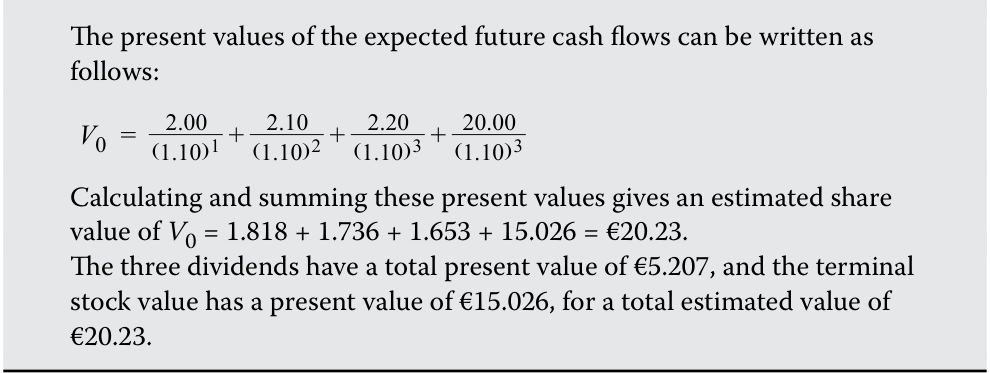
Extending the holding period into the indefinite future, we can say that a stock’s estimated value is the present value of all expected future dividends as shown in Equation 1.
Giá trị hiện tại của các dòng tiền tương lai dự kiến có thể được viết như sau:
Tính toán và cộng các giá trị hiện tại này lại cho ra giá trị cổ phiếu ước tính là $V_0 = 1.818 + 1.736 + 1.653 + 15.026 = €20.23$. Ba khoản cổ tức có tổng giá trị hiện tại là €5.207, và giá trị cổ phiếu cuối kỳ có giá trị hiện tại là €15.026, mang lại tổng giá trị ước tính là €20.23.
Mở rộng thời kỳ nắm giữ đến tương lai vô hạn, chúng ta có thể nói rằng giá trị ước tính của một cổ phiếu là giá trị hiện tại của tất cả các khoản cổ tức tương lai dự kiến như được trình bày trong Phương trình 1.
Consideration of an indefinite future is valid because businesses established as corporations are generally set up to operate indefinitely. This general form of the DDM applies even in the case in which the investor has a finite investment horizon. For that investor, stock value today depends directly on the dividends the investor expects to receive before the stock is sold and depends indirectly on the expected dividends for periods subsequent to that sale, because those expected future dividends determine the expected selling price. Thus, the general expression given by Equation 1 holds irrespective of the investor’s holding period.
Việc xem xét một tương lai vô hạn là hợp lý bởi vì các doanh nghiệp được thành lập dưới hình thức công ty cổ phần nhìn chung được thiết lập để hoạt động vô thời hạn. Dạng tổng quát này của DDM vẫn áp dụng ngay cả trong trường hợp nhà đầu tư có khung thời gian đầu tư hữu hạn. Đối với nhà đầu tư đó, giá trị cổ phiếu ngày hôm nay phụ thuộc trực tiếp vào các khoản cổ tức mà nhà đầu tư dự kiến nhận được trước khi bán cổ phiếu và phụ thuộc gián tiếp vào các khoản cổ tức dự kiến cho những kỳ sau khi bán, bởi vì những khoản cổ tức tương lai dự kiến đó quyết định giá bán dự kiến. Do vậy, biểu thức tổng quát được cho bởi Phương trình 1 luôn đúng bất kể thời kỳ nắm giữ của nhà đầu tư là bao lâu.
In practice, many analysts prefer to use a free-cash-flow-to-equity (FCFE) valuation model. These analysts assume that dividend-paying capacity should be reflected in the cash flow estimates rather than expected dividends . FCFE is a measure of dividend-paying capacity. Analysts may also use FCFE valuation models for a non-dividend-paying stock. To use a DDM, the analyst needs to predict the timing and amount of the first dividend and all the dividends or dividend growth thereafter. Making these predictions for non-dividend-paying stock accurately is typically difficult, so in such cases, analysts often resort to FCFE models.
Trên thực tế, nhiều chuyên gia phân tích ưa thích sử dụng mô hình định giá dòng tiền tự do thuộc về vốn chủ sở hữu (free-cash-flow-to-equity – FCFE). Các chuyên gia phân tích này giả định rằng năng lực chi trả cổ tức nên được phản ánh trong các ước tính dòng tiền hơn là cổ tức dự kiến. FCFE là một thước đo về năng lực chi trả cổ tức (dividend-paying capacity). Các chuyên gia phân tích cũng có thể sử dụng các mô hình định giá FCFE cho một cổ phiếu không trả cổ tức. Để sử dụng DDM, chuyên gia phân tích cần dự đoán thời điểm và quy mô của khoản cổ tức đầu tiên cùng tất cả các khoản cổ tức hoặc tốc độ tăng trưởng cổ tức sau đó. Việc đưa ra những dự đoán này một cách chính xác cho cổ phiếu không trả cổ tức thường rất khó khăn, vì vậy trong những trường hợp như thế, các chuyên gia phân tích thường tìm đến các mô hình FCFE.
The calculation of FCFE starts with the calculation of cash flow from operations (CFO). CFO is simply defined as net income plus non-cash expenses minus investment in working capital. FCFE is a measure of cash flow generated in a period that is available for distribution to common shareholders. What does “available for distribution” mean? The entire CFO is not available for distribution; the portion of the CFO needed for fixed capital investment (FCInv) during the period to maintain the value of the company as a going concern is not viewed as available for distribution to common shareholders. Net amounts borrowed (borrowings minus repayments) are considered to be available for distribution to common shareholders. Thus, FCFE can be expressed as
Việc tính toán FCFE bắt đầu bằng việc tính dòng tiền từ hoạt động kinh doanh (cash flow from operations – CFO). CFO được định nghĩa đơn giản là thu nhập ròng (net income) cộng với các chi phí phi tiền mặt (non-cash expenses) trừ đi khoản đầu tư vào vốn lưu động (investment in working capital). FCFE là thước đo dòng tiền được tạo ra trong một kỳ sẵn có để phân phối cho các cổ đông phổ thông. "Sẵn có để phân phối" có nghĩa là gì? Toàn bộ CFO không phải đều sẵn có để phân phối; phần CFO cần thiết cho đầu tư tài sản cố định (fixed capital investment – FCInv) trong kỳ nhằm duy trì giá trị của công ty như một doanh nghiệp hoạt động liên tục không được xem là sẵn có để phân phối cho các cổ đông phổ thông. Ngược lại, các khoản vay ròng (net amounts borrowed – tiền vay mới trừ đi tiền trả nợ gốc) được coi là sẵn có để phân phối cho các cổ đông phổ thông. Do đó, FCFE có thể được biểu diễn như sau:
FCFE = CFO – FCInv + Net borrowing ~~(4)~~
The information needed to calculate historical FCFE is available from a company’s statement of cash flows and financial disclosures. Frequently, under the assumption that management is acting in the interest of maintaining the value of the company as a going concern, reported capital expenditure is taken to represent FCInv. Analysts must make projections of financials to forecast future FCFE. Valuation obtained by using FCFE involves discounting expected future FCFE by the required rate of return on equity; the expression parallels Equation 1:
Thông tin cần thiết để tính toán FCFE lịch sử có sẵn từ báo cáo lưu chuyển tiền tệ và các thuyết minh báo cáo tài chính của công ty. Thông thường, dưới giả định rằng ban lãnh đạo đang hành động vì lợi ích duy trì giá trị của công ty như một doanh nghiệp hoạt động liên tục, chi tiêu vốn (capital expenditure) được báo cáo sẽ được lấy để đại diện cho FCInv. Các chuyên gia phân tích phải lập các dự phóng báo cáo tài chính để dự báo FCFE tương lai. Mức định giá thu được bằng cách sử dụng FCFE bao gồm việc chiết khấu các khoản FCFE tương lai dự kiến theo tỷ suất sinh lợi yêu cầu đối với vốn chủ sở hữu; biểu thức này song hành với Phương trình 1:
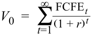
EXAMPLE 5
VÍ DỤ 5 (EXAMPLE 5)
Present Value Models
Các Mô hình Giá trị Hiện tại (Present Value Models)
- An investor expects a share to pay dividends of $3.00 and $3.15 at the end of Years 1 and 2, respectively. At the end of the second year, the investor expects the shares to trade at $40.00. The required rate of return on the shares is 8 percent. If the investor’s forecasts are accurate and the market price of the shares is currently $30, the most likely conclusion is that the shares are:
- A. overvalued.
B. undervalued.
- C. fairly valued.
- Một nhà đầu tư kỳ vọng một cổ phiếu sẽ trả cổ tức $3.00 và $3.15 vào cuối Năm 1 và Năm 2 tương ứng. Vào cuối năm thứ hai, nhà đầu tư kỳ vọng cổ phiếu sẽ giao dịch ở mức giá $40.00. Tỷ suất sinh lợi yêu cầu đối với cổ phiếu là 8 phần trăm. Nếu các dự báo của nhà đầu tư là chính xác và giá thị trường hiện tại của cổ phiếu là $30, kết luận có khả năng cao nhất là cổ phiếu đang:
-
A. bị định giá cao (overvalued).
-
B. bị định giá thấp (undervalued).
-
C. được định giá hợp lý (fairly valued).
Solution:
Lời giải:
B is correct.
B là đáp án đúng.
The value estimate of $39.77 exceeds the market price of $30, so the conclusion is that the shares are undervalued.
Ước tính giá trị $39.77 vượt quá giá thị trường $30, vì vậy kết luận là cổ phiếu đang bị định giá thấp.
- Two investors with different holding periods but the same expectations and required rate of return for a company are estimating the intrinsic value of a common share of the company. The investor with the shorter holding period will most likely estimate a:
-
A. lower intrinsic value.
-
B. higher intrinsic value.
-
C. similar intrinsic value.
- Hai nhà đầu tư có thời kỳ nắm giữ khác nhau nhưng có cùng các kỳ vọng và tỷ suất sinh lợi yêu cầu đối với một công ty đang ước tính giá trị nội tại của một cổ phiếu phổ thông của công ty đó. Nhà đầu tư có thời kỳ nắm giữ ngắn hơn sẽ có khả năng cao nhất ước tính một:
-
A. giá trị nội tại thấp hơn.
-
B. giá trị nội tại cao hơn.
-
C. giá trị nội tại tương tự.
Solution:
Lời giải:
C is correct. The intrinsic value of a security is independent of the investor’s holding period.
C là đáp án đúng. Giá trị nội tại của một chứng khoán độc lập với thời kỳ nắm giữ của nhà đầu tư.
- An equity valuation model that focuses on expected dividends rather than the capacity to pay dividends is the:
-
A. dividend discount model.
-
B. free cash flow to equity model.
-
C. cash flow return on investment model.
- Một mô hình định giá cổ phiếu tập trung vào cổ tức dự kiến thay vì năng lực chi trả cổ tức là:
-
A. mô hình chiết khấu cổ tức (dividend discount model).
-
B. mô hình dòng tiền tự do thuộc về vốn chủ sở hữu (free cash flow to equity model).
-
C. mô hình tỷ suất sinh lợi dòng tiền trên vốn đầu tư (cash flow return on investment model).
Solution:
Lời giải:
A is correct. Dividend discount models focus on expected dividends.
A là đáp án đúng. Các mô hình chiết khấu cổ tức tập trung vào các khoản cổ tức dự kiến.
How is the required rate of return for use in present value models estimated? To estimate the required rate of return on a share, analysts frequently use the capital asset pricing model (CAPM):
Tỷ suất sinh lợi yêu cầu để sử dụng trong các mô hình giá trị hiện tại được ước tính như thế nào? Để ước tính tỷ suất sinh lợi yêu cầu đối với một cổ phiếu, các chuyên gia phân tích thường xuyên sử dụng mô hình định giá tài sản vốn (capital asset pricing model – CAPM):
Required rate of return on share i = Current expected risk
- free rate of return ~~(5)~~ + Beta i [ Market ( equity ) risk premium ]
Equation 5 states that the required rate of return on a share is the sum of the current expected risk-free rate plus a risk premium that equals the product of the stock’s beta (a measure of non-diversifiable risk) and the market risk premium (the expected return of the market in excess of the risk-free return, where in practice, the “market” is often represented by a broad stock market index). However, even if analysts agree that the CAPM is an appropriate model, their inputs into the CAPM may differ. Thus, there is no uniquely correct answer to the question: What is the required rate of return?
Phương trình 5 phát biểu rằng tỷ suất sinh lợi yêu cầu đối với một cổ phiếu bằng tổng của lãi suất phi rủi ro kỳ vọng hiện tại cộng với một phần bù rủi ro bằng tích số giữa hệ số beta của cổ phiếu (thước đo rủi ro không thể đa dạng hóa – non-diversifiable risk) và phần bù rủi ro thị trường (market risk premium – tỷ suất sinh lợi kỳ vọng của thị trường vượt trên lãi suất phi rủi ro, trong đó trên thực tế, "thị trường" thường được đại diện bởi một chỉ số thị trường chứng khoán diện rộng). Tuy nhiên, ngay cả khi các chuyên gia phân tích đồng ý rằng CAPM là một mô hình phù hợp, các dữ liệu đầu vào của họ cho CAPM vẫn có thể khác nhau. Do đó, không có câu trả lời đúng duy nhất cho câu hỏi: Tỷ suất sinh lợi yêu cầu là bao nhiêu?
Other common methods for estimating the required rate of return for the stock of a company include adding a risk premium that is based on economic judgments, rather than the CAPM, to an appropriate risk-free rate (usually a government bond) and adding a risk premium to the yield on the company’s bonds. Good business and economic judgment is paramount in estimating the required rate of return. In many investment firms, required rates of return are determined by firm policy.
Các phương pháp phổ biến khác để ước tính tỷ suất sinh lợi yêu cầu đối với cổ phiếu của một công ty bao gồm việc cộng một phần bù rủi ro dựa trên các đánh giá kinh tế, thay vì dựa vào CAPM, vào một mức lãi suất phi rủi ro phù hợp (thường là trái phiếu chính phủ) và cộng một phần bù rủi ro vào lợi suất trái phiếu của chính công ty đó (bond yield plus risk premium). Sự phán đoán sắc bén về kinh doanh và kinh tế có vai trò tối quan trọng trong việc ước tính tỷ suất sinh lợi yêu cầu. Tại nhiều công ty đầu tư, tỷ suất sinh lợi yêu cầu được xác định theo chính sách của công ty.
PREFERRED STOCK VALUATION
ĐỊNH GIÁ CỔ PHIẾU ƯU ĐÃI (PREFERRED STOCK VALUATION)
6
6
calculate the intrinsic value of a non-callable, non-convertible preferred stock
tính toán giá trị nội tại của một cổ phiếu ưu đãi không có quyền mua lại và không có quyền chuyển đổi
explain advantages and disadvantages of each category of valuation model
giải thích các ưu điểm và nhược điểm của từng nhóm mô hình định giá
General dividend discount models are relatively easy to apply to preferred shares. In its simplest form, preferred stock is a form of equity (generally, non-voting) that has priority over common stock in the receipt of dividends and on the issuer’s assets in the event of a company’s liquidation. It may have a stated maturity date at which time payment of the stock’s par (face) value is made or it may be perpetual with no maturity date; additionally, it may be callable or convertible.
Các mô hình chiết khấu cổ tức tổng quát tương đối dễ áp dụng đối với cổ phiếu ưu đãi. Ở dạng đơn giản nhất, cổ phiếu ưu đãi (preferred stock) là một hình thức vốn chủ sở hữu (nhìn chung không có quyền biểu quyết) có thứ tự ưu tiên cao hơn cổ phiếu phổ thông trong việc nhận cổ tức và đối với tài sản của tổ chức phát hành trong trường hợp công ty bị thanh lý. Cổ phiếu ưu đãi có thể có một ngày đáo hạn xác định mà tại thời điểm đó mệnh giá (par/face value) của cổ phiếu được thanh toán, hoặc nó có thể là vĩnh cửu (perpetual) không có ngày đáo hạn; ngoài ra, nó có thể kèm quyền mua lại (callable) hoặc quyền chuyển đổi (convertible).
For a non-callable, non-convertible perpetual preferred share paying a level dividend D and assuming a constant required rate of return over time, Equation 1 reduces to the formula for the present value of a perpetuity. Its value is:
Đối với một cổ phiếu ưu đãi vĩnh cửu không có quyền mua lại, không có quyền chuyển đổi trả một mức cổ tức cố định $D$ và giả định tỷ suất sinh lợi yêu cầu không đổi theo thời gian, Phương trình 1 rút gọn thành công thức tính giá trị hiện tại của một niên kim vĩnh cửu (perpetuity). Giá trị của nó là:
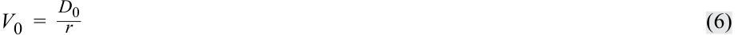
For example, a $100 par value non-callable perpetual preferred stock offers an annual dividend of $5.50. If its required rate of return is 6 percent, the value estimate would be $5.50/0.06 = $91.67.
Ví dụ, một cổ phiếu ưu đãi vĩnh cửu không có quyền mua lại có mệnh giá $100 trả cổ tức hàng năm là $5.50. Nếu tỷ suất sinh lợi yêu cầu của nó là 6 phần trăm, ước tính giá trị sẽ là $\$5.50 / 0.06 = \$91.67$.
For a non-callable, non-convertible preferred stock with maturity at time n , the estimated intrinsic value can be estimated by using Equation 3 but using the preferred stock’s par value, F , instead of Pn :
Đối với một cổ phiếu ưu đãi không có quyền mua lại, không có quyền chuyển đổi có thời điểm đáo hạn tại thời điểm $n$, giá trị nội tại ước tính có thể được tính bằng cách sử dụng Phương trình 3 nhưng thay thế $P_n$ bằng mệnh giá của cổ phiếu ưu đãi, $F$:
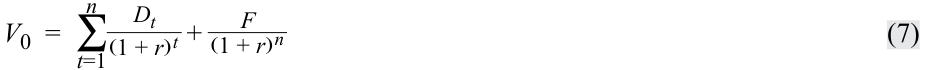
When Equation 7 is used, the most precise approach is to use values for n, r, and D that reflect the payment schedule of the dividends. This method is similar to the practice of fixed-income analysts in valuing a bond. For example, a non-convertible preferred stock with a par value of £20.00, maturity in six years, a nominal required rate of return of 8.20 percent, and semiannual dividends of £2.00 would be valued by using an n of 12, an r of 4.10 percent, a D of £2.00, and an F of £20.00. The result would be an estimated value of £31.01. Assuming payments are annual rather than semiannual (i.e., assuming that n = 6, r = 8.20 percent, and D = £4.00) would result in an estimated value of £30.84.
Khi sử dụng Phương trình 7, cách tiếp cận chuẩn xác nhất là sử dụng các giá trị cho $n, r,$ và $D$ phản ánh đúng lịch trình chi trả của cổ tức. Phương pháp này tương tự như thông lệ của các chuyên gia phân tích thu nhập cố định khi định giá một trái phiếu. Ví dụ, một cổ phiếu ưu đãi không có quyền chuyển đổi có mệnh giá £20.00, đáo hạn sau sáu năm, tỷ suất sinh lợi yêu cầu danh nghĩa là 8.20 phần trăm, và trả cổ tức bán niên (nửa năm một lần) là £2.00 sẽ được định giá bằng cách sử dụng $n = 12$, $r = 4.10\%$, $D = £2.00$, và $F = £20.00$. Kết quả sẽ là mức giá trị ước tính £31.01. Nếu giả định các khoản thanh toán được thực hiện hàng năm thay vì bán niên (tức là giả định $n = 6$, $r = 8.20\%$, và $D = £4.00$) thì sẽ cho ra kết quả giá trị ước tính là £30.84.
Preferred stock issues are frequently callable (redeemable) by the issuer at some point prior to maturity, often at par value or at prices in excess of par value that decline to par value as the maturity date approaches. Such call options tend to reduce the value of a preferred issue to an investor because the option to redeem will be exercised by the issuer when it is in the issuer's favor and ignored when it is not. For example, if an issuer can redeem shares at par value that would otherwise trade (on the basis of dividends, maturity, and required rate of return) above par value, the issuer has motivation to redeem the shares.
Các đợt phát hành cổ phiếu ưu đãi thường xuyên có tính năng cho phép tổ chức phát hành mua lại (callable/redeemable) tại một thời điểm nào đó trước khi đáo hạn, thường là ở mức mệnh giá hoặc ở các mức giá cao hơn mệnh giá và giảm dần về bằng mệnh giá khi ngày đáo hạn đến gần. Những quyền chọn mua lại (call options) như vậy có xu hướng làm giảm giá trị của đợt phát hành cổ phiếu ưu đãi đối với nhà đầu tư bởi vì quyền chọn mua lại sẽ được tổ chức phát hành thực hiện khi điều đó có lợi cho tổ chức phát hành và bị bỏ qua khi không có lợi. Ví dụ, nếu một tổ chức phát hành có thể mua lại các cổ phiếu ở mức mệnh giá trong khi lẽ ra chúng sẽ giao dịch trên mức mệnh giá (dựa trên cơ sở cổ tức, kỳ hạn và tỷ suất sinh lợi yêu cầu), thì tổ chức phát hành có động lực để mua lại số cổ phiếu đó.
Preferred stock issues can also include a retraction option that enables the holder of the preferred stock to sell the shares back to the issuer prior to maturity on prespecified terms. Essentially, the holder of the shares has a put option. Such put options tend to increase the value of a preferred issue to an investor because the option to retract will be exercised by the investor when it is in the investor's favor and ignored when it is
Các đợt phát hành cổ phiếu ưu đãi cũng có thể bao gồm quyền chọn bán lại (retraction option) cho phép người nắm giữ cổ phiếu ưu đãi bán lại cổ phiếu cho tổ chức phát hành trước khi đáo hạn theo các điều khoản được quy định trước. Về bản chất, người nắm giữ cổ phiếu có một quyền chọn bán (put option). Những quyền chọn bán như vậy có xu hướng làm tăng giá trị của đợt phát hành cổ phiếu ưu đãi đối với nhà đầu tư bởi vì quyền chọn bán lại sẽ được nhà đầu tư thực hiện khi điều đó có lợi cho nhà đầu tư và bị bỏ qua khi
not. Although the precise valuation of issues with such embedded options is beyond the scope of this reading, Example 6 includes a case in which Equation 7 can be used to approximate the value of a callable, retractable preferred share.
không có lợi. Mặc dù việc định giá chính xác các đợt phát hành có gắn kèm các quyền chọn (embedded options) như vậy nằm ngoài phạm vi của bài đọc này, Ví dụ 6 vẫn đưa vào một tình huống trong đó Phương trình 7 có thể được sử dụng để xấp xỉ giá trị của một cổ phiếu ưu đãi có quyền mua lại và quyền bán lại (callable, retractable preferred share).
EXAMPLE 6
VÍ DỤ 6 (EXAMPLE 6)
Preferred Share Valuation: Two Cases
Định giá Cổ phiếu Ưu đãi: Hai Tình huống (Preferred Share Valuation: Two Cases)
Case 1 : Non-callable, Non-convertible, Perpetual Preferred Shares
Tình huống 1 (Case 1) : Cổ phiếu Ưu đãi Vĩnh cửu Không có Quyền mua lại, Không có Quyền chuyển đổi (Non-callable, Non-convertible, Perpetual Preferred Shares)
The following facts concerning the Union Electric Company 4.75 percent perpetual preferred shares are as follows:
Các thông tin thực tế liên quan đến cổ phiếu ưu đãi vĩnh cửu lãi suất 4.75 phần trăm của Công ty Union Electric như sau:
-
Issuer: Union Electric Co. (owned by Ameren)
-
Par value: US$100
-
Dividend: US$4.75 per year
-
Maturity: perpetual
-
Embedded options: none
-
Credit rating: Moody’s Investors Service/Standard & Poor’s Ba1/BB
-
Required rate of return on Ba1/BB rated preferred shares as of valuation date: 7.5 percent.
- Estimate the intrinsic value of this preferred share.
-
Tổ chức phát hành: Union Electric Co. (thuộc sở hữu của Ameren)
-
Mệnh giá (Par value): US$100
-
Cổ tức (Dividend): US$4.75 mỗi năm
-
Kỳ hạn (Maturity): vĩnh cửu (perpetual)
-
Quyền chọn đi kèm (Embedded options): không có
-
Xếp hạng tín nhiệm (Credit rating): Moody’s Investors Service/Standard & Poor’s Ba1/BB
-
Tỷ suất sinh lợi yêu cầu đối với cổ phiếu ưu đãi có xếp hạng Ba1/BB tính đến ngày định giá: 7.5 phần trăm.
- Ước tính giá trị nội tại của cổ phiếu ưu đãi này.
Solution
Lời giải
Basing the discount rate on the required rate of return on Ba1/BB rated preferred shares of 7.5 percent gives an intrinsic value estimate of US$4.75/0.075 = US$63.33.
Dựa trên lãi suất chiết khấu là tỷ suất sinh lợi yêu cầu đối với cổ phiếu ưu đãi xếp hạng Ba1/BB ở mức 7.5 phần trăm, ta có ước tính giá trị nội tại là $\text{US}\$4.75 / 0.075 = \text{US}\$63.33$.
- Explain whether the intrinsic value of this issue would be higher or lower if the issue were callable (with all other facts remaining unchanged).
- Giải thích xem giá trị nội tại của đợt phát hành này sẽ cao hơn hay thấp hơn nếu đợt phát hành này có kèm quyền mua lại (callable) (với tất cả các thông tin khác giữ nguyên không đổi).
Solution
Lời giải
The intrinsic value would be lower if the issue were callable. The option to redeem or call the issue is valuable to the issuer because the call will be exercised when doing so is in the issuer’s interest. The intrinsic value of the shares to the investor will typically be lower if the issue is callable. In this case, because the intrinsic value without the call is much less than the par value, the issuer would be unlikely to redeem the issue if it were callable; thus, callability would reduce intrinsic value, but only slightly.
Giá trị nội tại sẽ thấp hơn nếu đợt phát hành có kèm quyền mua lại. Quyền chọn thu hồi hay mua lại đợt phát hành có giá trị đối với tổ chức phát hành bởi vì quyền mua lại sẽ được thực hiện khi việc làm đó đem lại lợi ích cho tổ chức phát hành. Giá trị nội tại của cổ phiếu đối với nhà đầu tư thường sẽ thấp hơn nếu đợt phát hành có thể bị mua lại. Trong trường hợp này, bởi vì giá trị nội tại khi không có quyền mua lại thấp hơn rất nhiều so với mệnh giá, tổ chức phát hành sẽ khó có khả năng mua lại đợt phát hành ngay cả khi nó có quyền mua lại; do đó, tính năng có thể mua lại (callability) sẽ làm giảm giá trị nội tại, nhưng chỉ giảm nhẹ.
Case 2 : Retractable Term Preferred Shares
Tình huống 2 (Case 2) : Cổ phiếu Ưu đãi Có kỳ hạn Kèm Quyền bán lại (Retractable Term Preferred Shares)
Retractable term preferred shares are a type of preferred share that has been previously issued by Canadian companies,and have now began to be offered by companies in other jurisdictions, including Japan. This type of issue specifies a “retraction date” when the preferred shareholders have the option to sell back their shares to the issuer at par value (i.e., the shares are “retractable” or “putable”
Cổ phiếu ưu đãi có kỳ hạn kèm quyền bán lại (retractable term preferred shares) là một loại cổ phiếu ưu đãi trước đây từng được phát hành bởi các công ty Canada, và hiện nay đã bắt đầu được chào bán bởi các công ty tại những khu vực pháp lý khác, bao gồm cả Nhật Bản. Loại phát hành này quy định cụ thể một "ngày thực hiện quyền bán lại (retraction date)" mà tại đó các cổ đông ưu đãi có quyền chọn bán lại cổ phiếu của họ cho tổ chức phát hành ở mức mệnh giá (tức là cổ phiếu có tính năng "bán lại – retractable" hay "putable"
at that date).2 At predetermined dates prior to the retraction date, the issuer has the option to redeem the preferred issue at predetermined prices (which are always at or above par value).
vào ngày đó).2 Vào các ngày được xác định trước sớm hơn ngày thực hiện quyền bán lại, tổ chức phát hành có quyền chọn mua lại đợt phát hành cổ phiếu ưu đãi ở các mức giá định trước (luôn bằng hoặc cao hơn mệnh giá).
An example of a retractable term preferred share currently outstanding is TMC (Toyota Motor Corporation), First Series Model AA class shares, with a 0.5 percent dividend rate, increasing by 0.5 percent every year until 2020 and thereafter, becoming fixed at 2.5 percent. TMC is leading global automobile manufacturer, with headquarters in Japan and global operations. The issue is in Japanese Yen. The shares have a ¥10,598 par value and pay a semiannual dividend of ¥26.5 [= (0.5 percent × ¥10,598)/2] on 31 March 2016. The semiannual dividend is expected to increase to ¥132.5 [= (2.5 percent × ¥10,598)/2] on 31 March 2020 and beyond. As of 31 December 2017 the company carried ratings from Moody’s and Standard & Poor’s of Aa3 and AA–, respectively. Thus, the shares are viewed by Moody’s and Standard & Poor’s as having “adequate” credit quality, qualified by “Aa3 and AA–,” which means relatively high quality within that group. Beginning from 2 April 2021, the shares are redeemable at the option of TMC at ¥10,598 (par value). The retraction date is the last day of March, June, September, and December of each year, starting from 1 September 2020, with the shares retractable at par value. The Series AA shares have voting rights and may exercise their voting rights and other rights held by holders of common shares of TMC in the same manner. The Series AA shares were issued at a 20% premium to the common shares price in 2015, and since then the share price has decreased to ¥7,243 as at 31 December 2017, and with a current required rate of 3.05 per year (1.525 percent semiannual). Because the issue’s market price is so far below the prices at which TMC could redeem or call the issue, redemption is considered to be unlikely by TMC, whereas the retraction option for the Series AA holders appears to have a significant value since they will potentially be able to put back the shares to TMC at approximately 45 percent over the current market value (¥10,598 compared to ¥7,243).
Một ví dụ về cổ phiếu ưu đãi có kỳ hạn kèm quyền bán lại hiện đang lưu hành là cổ phiếu hạng Model AA Đợt Đầu tiên (First Series Model AA class shares) của TMC (Toyota Motor Corporation), với tỷ lệ cổ tức 0.5 phần trăm, tăng thêm 0.5 phần trăm mỗi năm cho đến năm 2020 và sau đó trở nên cố định ở mức 2.5 phần trăm. TMC là nhà sản xuất ô tô hàng đầu thế giới, có trụ sở chính tại Nhật Bản và hoạt động trên toàn cầu. Đợt phát hành này tính bằng đồng Yên Nhật. Cổ phiếu có mệnh giá ¥10,598 và trả cổ tức bán niên là ¥26.5 $[= (0.5\% \times ¥10,598)/2]$ vào ngày 31 tháng 3 năm 2016. Cổ tức bán niên dự kiến sẽ tăng lên mức ¥132.5 $[= (2.5\% \times ¥10,598)/2]$ vào ngày 31 tháng 3 năm 2020 và các kỳ sau đó. Tính đến ngày 31 tháng 12 năm 2017, công ty mang xếp hạng tín nhiệm từ Moody’s và Standard & Poor’s lần lượt là Aa3 và AA–. Như vậy, cổ phiếu này được Moody’s và Standard & Poor’s đánh giá là có chất lượng tín dụng "đảm bảo (adequate)", được định danh bởi mức "Aa3 và AA–", nghĩa là có chất lượng tương đối cao trong nhóm đó. Bắt đầu từ ngày 2 tháng 4 năm 2021, cổ phiếu có thể được mua lại theo quyền chọn của TMC ở mức ¥10,598 (mệnh giá). Ngày thực hiện quyền bán lại (retraction date) là ngày cuối cùng của các tháng 3, tháng 6, tháng 9 và tháng 12 hàng năm, bắt đầu từ ngày 1 tháng 9 năm 2020, với việc cổ phiếu có thể được bán lại ở mức mệnh giá. Cổ phiếu Series AA có quyền biểu quyết và có thể thực hiện quyền biểu quyết cũng như các quyền khác mà cổ đông phổ thông của TMC nắm giữ theo cùng một cách thức. Cổ phiếu Series AA được phát hành ở mức giá cao hơn 20% (20% premium) so với giá cổ phiếu phổ thông vào năm 2015, và kể từ đó giá cổ phiếu đã giảm xuống mức ¥7,243 tính đến ngày 31 tháng 12 năm 2017, với tỷ suất sinh lợi yêu cầu hiện tại là 3.05% mỗi năm (1.525 phần trăm mỗi nửa năm). Bởi vì giá thị trường của đợt phát hành thấp hơn rất nhiều so với mức giá mà TMC có thể mua lại hoặc thu hồi đợt phát hành, việc TMC mua lại được coi là khó có khả năng xảy ra, trong khi quyền chọn bán lại dành cho những người nắm giữ Series AA dường như có giá trị đáng kể vì họ có tiềm năng bán lại cổ phiếu cho TMC ở mức giá cao hơn xấp xỉ 45 phần trăm so với giá trị thị trường hiện tại (¥10,598 so với ¥7,243).
- Assume that the issue will be retracted in December 2020; the holders of the shares will put the shares to the company in December 2020. Based on the information given, estimate the intrinsic value of a share. Assume it is December 2017.
- Giả sử rằng đợt phát hành sẽ được thực hiện quyền bán lại vào tháng 12 năm 2020; những người nắm giữ cổ phiếu sẽ bán lại (put) cổ phiếu cho công ty vào tháng 12 năm 2020. Dựa trên thông tin đã cho, hãy ước tính giá trị nội tại của một cổ phiếu. Giả sử thời điểm hiện tại là tháng 12 năm 2017.
Solution
Lời giải
An intrinsic value estimate of a share of this preferred issue is ¥10,279. Expected semiannual dividends:
Ước tính giá trị nội tại của một cổ phiếu thuộc đợt phát hành ưu đãi này là ¥10,279. Các khoản cổ tức bán niên dự kiến:
Year ended March 31, 2018: ¥79.5 [= (1.5 percent × ¥10,598)/2]
Năm kết thúc ngày 31 tháng 3 năm 2018: $¥79.5 \ [= (1.5\% \times ¥10,598)/2]$
Year ended March 31, 2019: ¥106 [= (2.0 percent × ¥10,598)/2]
Năm kết thúc ngày 31 tháng 3 năm 2019: $¥106 \ [= (2.0\% \times ¥10,598)/2]$
Year ended March 31, 2020: ¥132.5 [= (2.5 percent × ¥10,598)/2]
Năm kết thúc ngày 31 tháng 3 năm 2020: $¥132.5 \ [= (2.5\% \times ¥10,598)/2]$
_ _ _ _ _ _ __V_0 = [ 1.01525¥79.5+ 1.01525¥79.52+ 1.01525¥1063+ 1.01525¥1064+ 1.01525¥132.55+ 1.01525¥132.56+ 1.01525¥10, 5986] ≈ ¥10, 279
The difference between the current market price of ¥7,243 and the intrinsic value of ¥10,279 is the implied value of retractable option given to the holders of the Series AA shares.
Khoảng chênh lệch giữa giá thị trường hiện tại là ¥7,243 và giá trị nội tại là ¥10,279 chính là giá trị hàm ẩn (implied value) của quyền chọn bán lại được trao cho những người nắm giữ cổ phiếu Series AA.
2 “Retraction” refers to this option, which is a put option. The terminology is not completely settled: The type of share being called “retractable term preferred” is also known as “hard retractable preferred,” with “hard” referring to payment in cash rather than common shares at the retraction date.
2 "Quyền bán lại (Retraction)" đề cập đến quyền chọn này, vốn là một quyền chọn bán (put option). Thuật ngữ này vẫn chưa hoàn toàn thống nhất: Loại cổ phiếu được gọi là "cổ phiếu ưu đãi có kỳ hạn kèm quyền bán lại (retractable term preferred)" còn được biết đến với tên gọi "cổ phiếu ưu đãi bán lại cứng (hard retractable preferred)", với từ "cứng (hard)" ám chỉ việc thanh toán bằng tiền mặt thay vì bằng cổ phiếu phổ thông vào ngày thực hiện quyền bán lại.